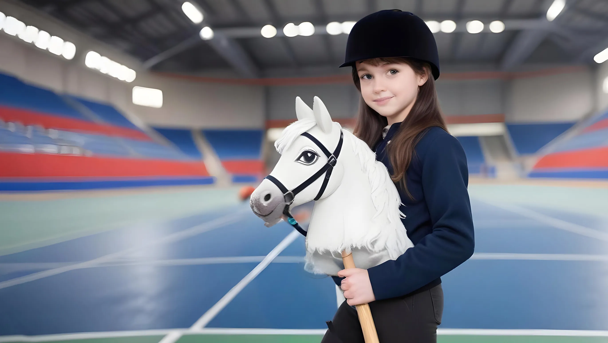

Hobby horsing to wyjątkowa aktywność, która łączy elementy sportu, zabawy i kreatywności. Polega na jeździe na imitacji konia, którą uczestnicy tworzą samodzielnie lub kupują. "Konie" wykonane są zazwyczaj z drewnianego kija i materiałowej głowy, co daje możliwość personalizacji i pokazania swojego stylu.
W hobby horsing organizowane są liczne zawody, w których uczestnicy rywalizują w takich konkurencjach jak skoki przez przeszkody czy ujeżdżenie. Społeczność hobby horsing jest bardzo wspierająca i otwarta na nowych członków. To idealne miejsce, aby nawiązać nowe znajomości i dzielić się swoją pasją.

Rozpoczęcie przygody z hobby horsing jest bardzo proste. Wystarczy stworzyć własnego konia lub kupić gotowego, znaleźć miejsce do treningu i rozpocząć zabawę. Można także dołączyć do grup na mediach społecznościowych, aby uzyskać wskazówki i porady od innych uczestników.